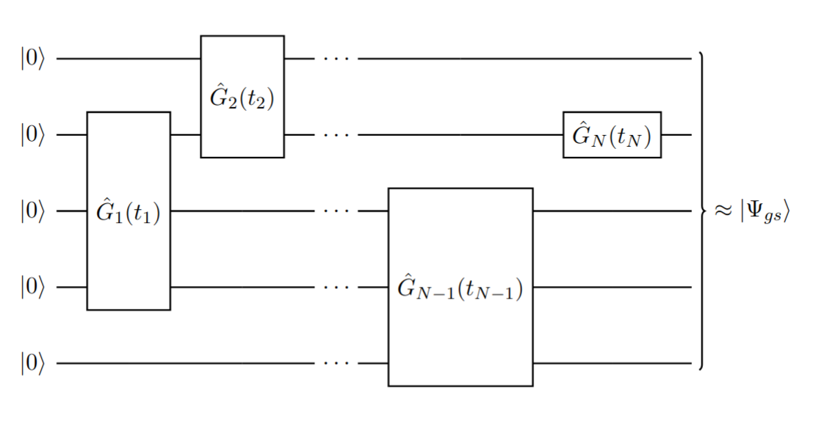
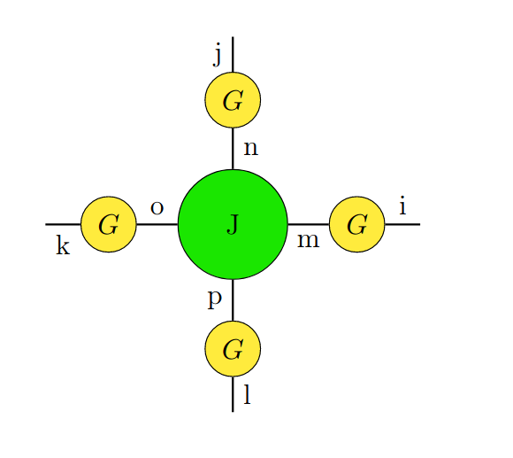
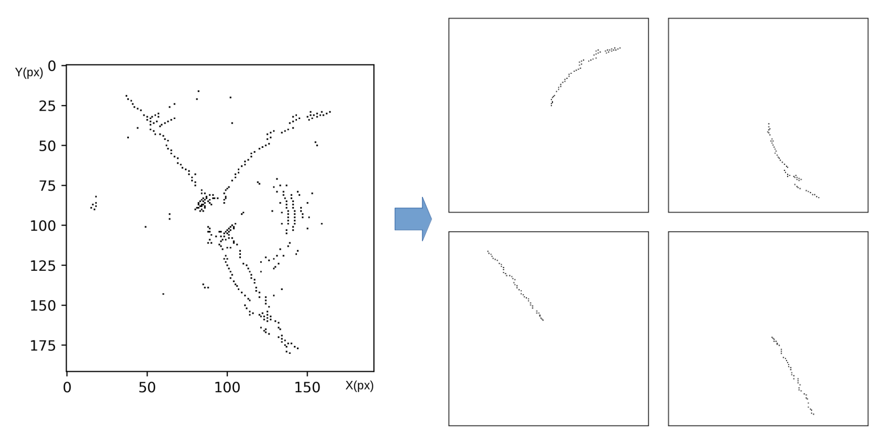
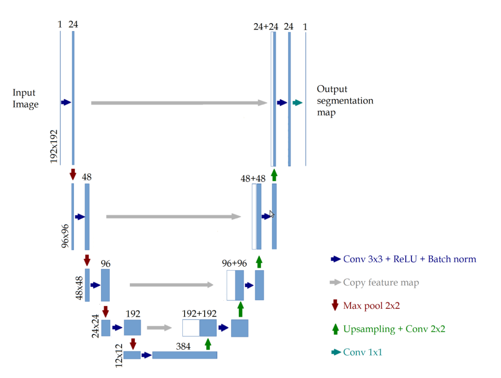

An overview of the projects and research I have been involved with in the areas of quantum information, machine learning and computational modelling
Digital-analog quantum simulation of quantum chemistry
MSc thesis at the Quantum Matter and Artificial Intelligence (QMAI) group at TU Delft. During this project we studied digital and analog algorithms for quantum chemistry applications.
Approximating ground states with free-fermionic states in a quantum computer
Research project carried out as part of my Honours Programme in my MSc degree. I worked under the supervision of Prof. Jordi Tura in the Applied Quantum Algorithms (AQA) group (University of Leiden) studying Variational Quantum Algorithms to approximate the ground state of fermionic systems. We designed an adaptative VQE able that provides a Gaussian state approximation of a general fermionic system. We numerically benchmarked the VQE with two important fermionic systems: a system of non-interacting fermions or free-fermions, and the Sachdev-Ye-Kitaev (SYK) model.
More details about this project can be found here .


Deep learning for particle tracking
For my bachelor thesis, I studied deep learning techniques to analyze data from particle accelerators. Current particle accelerators generate very large amounts of data that need to be analyzed. The goal of my thesis was to train and benchmark a Convolutional Neural Network to reduce the noise and identify particle tracks in images generated by particle collision events in acceleators such as PANDA experiment. a particular type of Neural Network that has been proven
The full thesis can be consulted here here .


sOther projects
Epidemic simulation using percolation theory
Quantum Approximate Optimization Algorithm for the Max-Cut
Simulation of molecular dynamics
Monte-Carlo simulation of the Ising Model